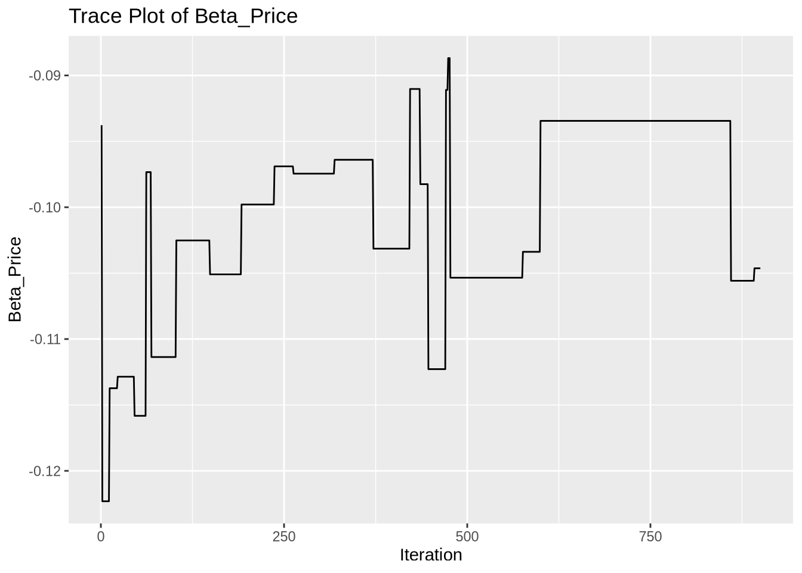
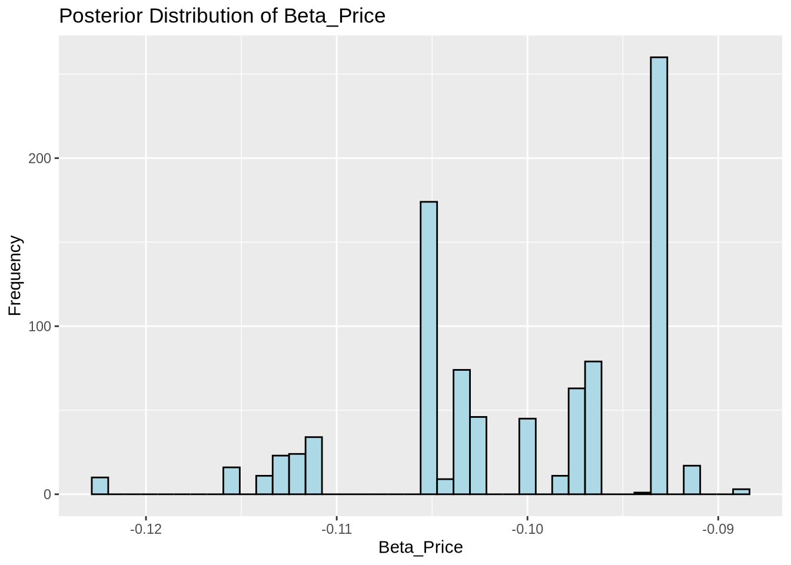

# set seed for reproducibility
set.seed(123)
# define attributes
brand <- c("N", "P", "H") # Netflix, Prime, Hulu
ad <- c("Yes", "No")
price <- seq(8, 32, by=4)
# generate all possible profiles
profiles <- expand.grid(
brand = brand,
ad = ad,
price = price
)
m <- nrow(profiles)
# assign part-worth utilities (true parameters)
b_util <- c(N = 1.0, P = 0.5, H = 0)
a_util <- c(Yes = -0.8, No = 0.0)
p_util <- function(p) -0.1 * p
# number of respondents, choice tasks, and alternatives per task
n_peeps <- 100
n_tasks <- 10
n_alts <- 3
# function to simulate one respondent’s data
sim_one <- function(id) {
datlist <- list()
# loop over choice tasks
for (t in 1:n_tasks) {
# randomly sample 3 alts (better practice would be to use a design)
dat <- cbind(resp=id, task=t, profiles[sample(m, size=n_alts), ])
# compute deterministic portion of utility
dat$v <- b_util[dat$brand] + a_util[dat$ad] + p_util(dat$price) |> round(10)
# add Gumbel noise (Type I extreme value)
dat$e <- -log(-log(runif(n_alts)))
dat$u <- dat$v + dat$e
# identify chosen alternative
dat$choice <- as.integer(dat$u == max(dat$u))
# store task
datlist[[t]] <- dat
}
# combine all tasks for one respondent
do.call(rbind, datlist)
}
# simulate data for all respondents
conjoint_data <- do.call(rbind, lapply(1:n_peeps, sim_one))
# remove values unobservable to the researcher
conjoint_data <- conjoint_data[ , c("resp", "task", "brand", "ad", "price", "choice")]
# clean up
rm(list=setdiff(ls(), "conjoint_data"))Multinomial Logit Model
This assignment expores two methods for estimating the MNL model: (1) via Maximum Likelihood, and (2) via a Bayesian approach using a Metropolis-Hastings MCMC algorithm.
1. Likelihood for the Multi-nomial Logit (MNL) Model
Suppose we have \(i=1,\ldots,n\) consumers who each select exactly one product \(j\) from a set of \(J\) products. The outcome variable is the identity of the product chosen \(y_i \in \{1, \ldots, J\}\) or equivalently a vector of \(J-1\) zeros and \(1\) one, where the \(1\) indicates the selected product. For example, if the third product was chosen out of 3 products, then either \(y=3\) or \(y=(0,0,1)\) depending on how we want to represent it. Suppose also that we have a vector of data on each product \(x_j\) (eg, brand, price, etc.).
We model the consumer’s decision as the selection of the product that provides the most utility, and we’ll specify the utility function as a linear function of the product characteristics:
\[ U_{ij} = x_j'\beta + \epsilon_{ij} \]
where \(\epsilon_{ij}\) is an i.i.d. extreme value error term.
The choice of the i.i.d. extreme value error term leads to a closed-form expression for the probability that consumer \(i\) chooses product \(j\):
\[ \mathbb{P}_i(j) = \frac{e^{x_j'\beta}}{\sum_{k=1}^Je^{x_k'\beta}} \]
For example, if there are 3 products, the probability that consumer \(i\) chooses product 3 is:
\[ \mathbb{P}_i(3) = \frac{e^{x_3'\beta}}{e^{x_1'\beta} + e^{x_2'\beta} + e^{x_3'\beta}} \]
A clever way to write the individual likelihood function for consumer \(i\) is the product of the \(J\) probabilities, each raised to the power of an indicator variable (\(\delta_{ij}\)) that indicates the chosen product:
\[ L_i(\beta) = \prod_{j=1}^J \mathbb{P}_i(j)^{\delta_{ij}} = \mathbb{P}_i(1)^{\delta_{i1}} \times \ldots \times \mathbb{P}_i(J)^{\delta_{iJ}}\]
Notice that if the consumer selected product \(j=3\), then \(\delta_{i3}=1\) while \(\delta_{i1}=\delta_{i2}=0\) and the likelihood is:
\[ L_i(\beta) = \mathbb{P}_i(1)^0 \times \mathbb{P}_i(2)^0 \times \mathbb{P}_i(3)^1 = \mathbb{P}_i(3) = \frac{e^{x_3'\beta}}{\sum_{k=1}^3e^{x_k'\beta}} \]
The joint likelihood (across all consumers) is the product of the \(n\) individual likelihoods:
\[ L_n(\beta) = \prod_{i=1}^n L_i(\beta) = \prod_{i=1}^n \prod_{j=1}^J \mathbb{P}_i(j)^{\delta_{ij}} \]
And the joint log-likelihood function is:
\[ \ell_n(\beta) = \sum_{i=1}^n \sum_{j=1}^J \delta_{ij} \log(\mathbb{P}_i(j)) \]
2. Simulate Conjoint Data
We will simulate data from a conjoint experiment about video content streaming services. We elect to simulate 100 respondents, each completing 10 choice tasks, where they choose from three alternatives per task. For simplicity, there is not a “no choice” option; each simulated respondent must select one of the 3 alternatives.
Each alternative is a hypothetical streaming offer consistent of three attributes: (1) brand is either Netflix, Amazon Prime, or Hulu; (2) ads can either be part of the experience, or it can be ad-free, and (3) price per month ranges from $4 to $32 in increments of $4.
The part-worths (ie, preference weights or beta parameters) for the attribute levels will be 1.0 for Netflix, 0.5 for Amazon Prime (with 0 for Hulu as the reference brand); -0.8 for included adverstisements (0 for ad-free); and -0.1*price so that utility to consumer \(i\) for hypothethical streaming service \(j\) is
\[ u_{ij} = (1 \times Netflix_j) + (0.5 \times Prime_j) + (-0.8*Ads_j) - 0.1\times Price_j + \varepsilon_{ij} \]
where the variables are binary indicators and \(\varepsilon\) is Type 1 Extreme Value (ie, Gumble) distributed.
The following code provides the simulation of the conjoint data.
Note
3. Preparing the Data for Estimation
The “hard part” of the MNL likelihood function is organizing the data, as we need to keep track of 3 dimensions (consumer \(i\), covariate \(k\), and product \(j\)) instead of the typical 2 dimensions for cross-sectional regression models (consumer \(i\) and covariate \(k\)). The fact that each task for each respondent has the same number of alternatives (3) helps. In addition, we need to convert the categorical variables for brand and ads into binary variables.
We begin by converting categorical variables into binary indicators. For the brand attribute, we create dummies for Netflix and Prime, leaving Hulu as the reference category. Similarly, we create a binary variable ad_yes indicating whether advertisements are included. This transformation ensures that all covariates are numeric and suitable for estimation in a Multinomial Logit framework. The resulting dataset includes one row per alternative, with each row identified by respondent, task, and alternative-specific features. ::: {.cell}
library(dplyr)
# Recode brand to dummy variables (reference category: Hulu)
conjoint_data_prep <- conjoint_data %>%
mutate(
brand_Netflix = as.integer(brand == "N"),
brand_Prime = as.integer(brand == "P"),
ad_yes = as.integer(ad == "Yes") # Ad included = 1
) %>%
# Drop original categorical variables
select(-brand, -ad)
# View structure to confirm
head(conjoint_data_prep) resp task price choice brand_Netflix brand_Prime ad_yes
31 1 1 28 1 1 0 1
15 1 1 16 0 0 0 1
14 1 1 16 0 0 1 1
37 1 2 32 0 1 0 1
141 1 2 16 1 0 1 1
25 1 2 24 0 1 0 1:::
4. Estimation via Maximum Likelihood
We now estimate the parameters of the MNL model using Maximum Likelihood. The log-likelihood is constructed by evaluating the softmax probability of each alternative within a choice task and summing the log-probabilities of the chosen alternatives. We use the optim() function in R with the BFGS method to maximize the likelihood. The estimated part-worth utilities are reported below. ::: {.cell}
# Get matrix of predictors
X <- conjoint_data_prep %>%
select(brand_Netflix, brand_Prime, ad_yes, price) %>%
as.matrix()
# Response vector: 1 if chosen, 0 otherwise
y <- conjoint_data_prep$choice
# Vector identifying choice tasks (groupings of 3 alternatives per task)
task_ids <- paste0(conjoint_data_prep$resp, "_", conjoint_data_prep$task)
# Define log-likelihood function
log_likelihood <- function(beta, X, y, task_ids) {
ll <- 0
beta <- matrix(beta, ncol = 1)
for (t in unique(task_ids)) {
idx <- which(task_ids == t)
Xt <- X[idx, ]
yt <- y[idx]
v <- Xt %*% beta # deterministic utility
exp_v <- exp(v)
probs <- exp_v / sum(exp_v) # softmax
ll <- ll + sum(yt * log(probs))
}
return(-ll) # negative log-likelihood for minimization
}
# Initial guess for beta (e.g., all zeros)
beta0 <- rep(0, ncol(X))
# Run optimization
result <- optim(
par = beta0,
fn = log_likelihood,
X = X,
y = y,
task_ids = task_ids,
method = "BFGS",
control = list(maxit = 1000),
hessian = TRUE
)
# Print MLE estimates
mle_estimates <- result$par
names(mle_estimates) <- colnames(X)
mle_estimatesbrand_Netflix brand_Prime ad_yes price
0.94120473 0.50161701 -0.73200143 -0.09948157 :::
We use the optim() function in R to obtain maximum likelihood estimates for the four parameters: brand (Netflix, Prime), ads, and price. To assess the uncertainty in our estimates, we compute the standard errors from the inverse of the Hessian matrix returned by the optimizer. We then construct 95% confidence intervals using the normal approximation. The table below summarizes the point estimates, standard errors, and confidence intervals for each attribute. ::: {.cell}
# Extract estimated beta coefficients
mle_estimates <- result$par
names(mle_estimates) <- colnames(X)
# Invert Hessian to get variance-covariance matrix
hessian_inv <- solve(result$hessian)
# Standard errors = sqrt of diagonal
std_errors <- sqrt(diag(hessian_inv))
# 95% confidence intervals
z_value <- qnorm(0.975)
ci_lower <- mle_estimates - z_value * std_errors
ci_upper <- mle_estimates + z_value * std_errors
# Combine into a summary table
mle_summary <- data.frame(
Estimate = mle_estimates,
StdError = std_errors,
CI_Lower = ci_lower,
CI_Upper = ci_upper
)
# Show table
knitr::kable(mle_summary, digits = 4)| Estimate | StdError | CI_Lower | CI_Upper | |
|---|---|---|---|---|
| brand_Netflix | 0.9412 | 0.1110 | 0.7236 | 1.1588 |
| brand_Prime | 0.5016 | 0.1111 | 0.2839 | 0.7194 |
| ad_yes | -0.7320 | 0.0878 | -0.9041 | -0.5599 |
| price | -0.0995 | 0.0063 | -0.1119 | -0.0871 |
:::
5. Estimation via Bayesian Methods
We now estimate the model using Bayesian methods via a Metropolis-Hastings MCMC sampler. We assume normal priors for each of the four coefficients: N(0, 5) for the binary variables (Netflix, Prime, Ads) and N(0, 1) for the price variable.
Candidate values are proposed by adding Gaussian noise to each parameter independently: the first three parameters are perturbed using N(0, 0.05) and the price parameter using N(0, 0.005). We ran the sampler for 1,000 iterations and discarded the first 100 as burn-in.
The table below reports the posterior means, standard deviations, and 95% credible intervals for each coefficient. ::: {.cell}
set.seed(42)
# Use simulated data
X <- conjoint_data_prep %>%
select(brand_Netflix, brand_Prime, ad_yes, price) %>%
as.matrix()
y <- conjoint_data_prep$choice
task_ids <- paste0(conjoint_data_prep$resp, "_", conjoint_data_prep$task)
# Log-prior function
log_prior <- function(beta) {
dnorm(beta[1], 0, sqrt(5), log = TRUE) +
dnorm(beta[2], 0, sqrt(5), log = TRUE) +
dnorm(beta[3], 0, sqrt(5), log = TRUE) +
dnorm(beta[4], 0, 1, log = TRUE)
}
# Log-posterior function (log-likelihood + log-prior)
log_posterior <- function(beta) {
-log_likelihood(beta, X, y, task_ids) + log_prior(beta)
}
# Proposal function
proposal_function <- function(beta) {
beta_new <- beta
beta_new[1:3] <- beta[1:3] + rnorm(3, 0, sqrt(0.05))
beta_new[4] <- beta[4] + rnorm(1, 0, sqrt(0.005))
return(beta_new)
}
# MCMC sampler
run_mcmc <- function(start, iterations = 1000) {
chain <- matrix(NA, nrow = iterations, ncol = length(start))
chain[1, ] <- start
current_lp <- log_posterior(start)
for (i in 2:iterations) {
proposal <- proposal_function(chain[i - 1, ])
proposal_lp <- log_posterior(proposal)
accept_prob <- exp(proposal_lp - current_lp)
if (runif(1) < accept_prob) {
chain[i, ] <- proposal
current_lp <- proposal_lp
} else {
chain[i, ] <- chain[i - 1, ]
}
}
return(chain)
}
# Run MCMC
start_vals <- rep(0, 4)
mcmc_chain <- run_mcmc(start = start_vals, iterations = 1000)
# Discard first 100 as burn-in
mcmc_chain_post <- mcmc_chain[101:1000, ]
colnames(mcmc_chain_post) <- colnames(X)
# Summarize posterior
bayes_summary <- data.frame(
Mean = apply(mcmc_chain_post, 2, mean),
SD = apply(mcmc_chain_post, 2, sd),
CI_Lower = apply(mcmc_chain_post, 2, quantile, 0.025),
CI_Upper = apply(mcmc_chain_post, 2, quantile, 0.975)
)
knitr::kable(bayes_summary, digits = 4)| Mean | SD | CI_Lower | CI_Upper | |
|---|---|---|---|---|
| brand_Netflix | 1.0123 | 0.1351 | 0.7509 | 1.3751 |
| brand_Prime | 0.5578 | 0.1292 | 0.2635 | 0.8512 |
| ad_yes | -0.6985 | 0.1036 | -0.9360 | -0.5266 |
| price | -0.1006 | 0.0069 | -0.1158 | -0.0934 |
:::
Below we show the trace plot and posterior histogram for the price coefficient. The trace plot demonstrates good mixing and stationarity, indicating the sampler is performing well. The histogram reflects the shape of the marginal posterior distribution for that parameter. ::: {.cell}
library(ggplot2)
# Extract the price coefficient samples (column 4)
price_samples <- mcmc_chain_post[, "price"]
# Create a data frame for plotting
price_df <- data.frame(
Iteration = 1:length(price_samples),
Beta_Price = price_samples
)
# Trace plot
ggplot(price_df, aes(x = Iteration, y = Beta_Price)) +
geom_line() +
labs(title = "Trace Plot of Beta_Price", y = "Beta_Price", x = "Iteration")
# Histogram
ggplot(price_df, aes(x = Beta_Price)) +
geom_histogram(bins = 40, color = "black", fill = "lightblue") +
labs(title = "Posterior Distribution of Beta_Price", x = "Beta_Price", y = "Frequency")
:::
We also report the posterior means, standard deviations, and 95% credible intervals for all four parameters, and compare them to the corresponding values from the Maximum Likelihood Estimation. Across all four coefficients, the posterior means are very close to the MLEs, with similar uncertainty ranges. This reinforces the idea that both estimation approaches yield consistent results, while Bayesian methods additionally provide full posterior distributions. ::: {.cell}
# Add method label to each
bayes_summary$Method <- "Bayesian"
mle_summary$Method <- "MLE"
# Assign parameter names explicitly using column names from X
param_names <- colnames(X)
bayes_summary$Parameter <- param_names
mle_summary$Parameter <- param_names
# Combine both
comparison_table <- rbind(
bayes_summary[, c("Parameter", "Method", "Mean", "SD", "CI_Lower", "CI_Upper")],
mle_summary[, c("Parameter", "Method", "Estimate", "StdError", "CI_Lower", "CI_Upper")] %>%
rename(Mean = Estimate, SD = StdError)
)
# Show comparison table
knitr::kable(comparison_table, digits = 4)| Parameter | Method | Mean | SD | CI_Lower | CI_Upper | |
|---|---|---|---|---|---|---|
| brand_Netflix | brand_Netflix | Bayesian | 1.0123 | 0.1351 | 0.7509 | 1.3751 |
| brand_Prime | brand_Prime | Bayesian | 0.5578 | 0.1292 | 0.2635 | 0.8512 |
| ad_yes | ad_yes | Bayesian | -0.6985 | 0.1036 | -0.9360 | -0.5266 |
| price | price | Bayesian | -0.1006 | 0.0069 | -0.1158 | -0.0934 |
| brand_Netflix1 | brand_Netflix | MLE | 0.9412 | 0.1110 | 0.7236 | 1.1588 |
| brand_Prime1 | brand_Prime | MLE | 0.5016 | 0.1111 | 0.2839 | 0.7194 |
| ad_yes1 | ad_yes | MLE | -0.7320 | 0.0878 | -0.9041 | -0.5599 |
| price1 | price | MLE | -0.0995 | 0.0063 | -0.1119 | -0.0871 |
:::
6. Discussion
Now using the actual dataset rather than simulated data, we observe that the estimated coefficients tell a coherent story about consumer preferences.
The coefficient on Netflix is larger than the coefficient on Prime (beta_Netflix > beta_Prime), which suggests that — all else equal — consumers tend to prefer Netflix over Amazon Prime. This means that the utility associated with Netflix-branded options was typically higher, increasing the likelihood of selection.
The estimated coefficient on price is negative (beta_price < 0), which is consistent with standard economic theory. It indicates that as the monthly price of a streaming service increases, the probability that a consumer selects that service decreases.
These findings reinforce the intuitive idea that brand and price are key drivers of choice behavior. The negative impact of ads and the preference for Netflix suggest that both product experience and brand perception influence consumer decisions in this context. ::: {.cell}
library(readr)
# Load real data
real_data <- read_csv("../../data/conjoint_data.csv")
# Preprocess: create dummies
real_data_prep <- real_data %>%
mutate(
brand_Netflix = as.integer(brand == "N"),
brand_Prime = as.integer(brand == "P"),
ad_yes = as.integer(ad == "Yes")
) %>%
select(resp, task, brand_Netflix, brand_Prime, ad_yes, price, choice)
# Set up for MLE
X_real <- real_data_prep %>%
select(brand_Netflix, brand_Prime, ad_yes, price) %>%
as.matrix()
y_real <- real_data_prep$choice
task_ids_real <- paste0(real_data_prep$resp, "_", real_data_prep$task)
# Use existing log-likelihood function
beta0 <- rep(0, ncol(X_real))
result_real <- optim(
par = beta0,
fn = log_likelihood,
X = X_real,
y = y_real,
task_ids = task_ids_real,
method = "BFGS",
hessian = TRUE
)
mle_real <- result_real$par
names(mle_real) <- colnames(X_real)
mle_realbrand_Netflix brand_Prime ad_yes price
0.94120473 0.50161701 -0.73200143 -0.09948157 :::
To simulate data from a multi-level (hierarchical) model, we would assign each individual their own set of preference weights (betas), rather than using the same beta vector for everyone.
Each person’s beta_i would be drawn from a population-level distribution, typically a multivariate normal: beta_i ~ MVN(mu, Sigma)
We would then simulate choices for each respondent using their own beta_i. This allows us to model preference heterogeneity across individuals. ::: {.cell}
library(MASS) # for mvrnorm
set.seed(123)
# Define population-level parameters
mu <- c(Net = 1.0, Prime = 0.5, Ads = -0.8, Price = -0.1)
Sigma <- diag(c(0.3, 0.3, 0.2, 0.02)^2)
# Simulate betas for 100 individuals
n_respondents <- 100
beta_individuals <- mvrnorm(n_respondents, mu = mu, Sigma = Sigma)
head(beta_individuals) Net Prime Ads Price
[1,] 0.8318573 0.2868780 -0.3602379 -0.11430484
[2,] 0.9309468 0.5770651 -0.5375174 -0.11505378
[3,] 1.4676125 0.4259924 -0.8530290 -0.11877077
[4,] 1.0211525 0.3957372 -0.6913612 -0.12105027
[5,] 1.0387863 0.2145144 -0.8828680 -0.10874319
[6,] 1.5145195 0.4864917 -0.8952494 -0.09337642:::
To estimate a hierarchical model, we treat the beta_i values as unobserved (latent) variables and aim to estimate both the individual-level preferences and the population-level distribution (mu, Sigma).
This is usually done using Bayesian methods (like MCMC or hierarchical Bayes) or maximum simulated likelihood.
Hierarchical models are more realistic for real-world conjoint data, where different consumers have different preferences. ::: {.cell}
# Example profiles
profiles <- expand.grid(
brand = c("N", "P", "H"),
ad = c("Yes", "No"),
price = seq(8, 32, by = 4)
)
# Encode features
profiles <- profiles[sample(nrow(profiles), 3), ] # select 3 random alternatives
profiles$brand_Netflix <- as.integer(profiles$brand == "N")
profiles$brand_Prime <- as.integer(profiles$brand == "P")
profiles$ad_yes <- as.integer(profiles$ad == "Yes")
X <- as.matrix(profiles[, c("brand_Netflix", "brand_Prime", "ad_yes", "price")])
# Choose beta for respondent 1
beta_1 <- beta_individuals[1, ]
# Simulate utility + Gumbel noise
v <- X %*% beta_1
e <- -log(-log(runif(3))) # Gumbel noise
u <- v + e
# Identify chosen alternative
profiles$utility <- u
profiles$chosen <- as.integer(u == max(u))
profiles brand ad price brand_Netflix brand_Prime ad_yes utility chosen
41 P No 32 0 1 0 -3.660838 0
12 H No 12 0 0 0 2.074713 1
8 P Yes 12 0 1 1 -1.111536 0:::